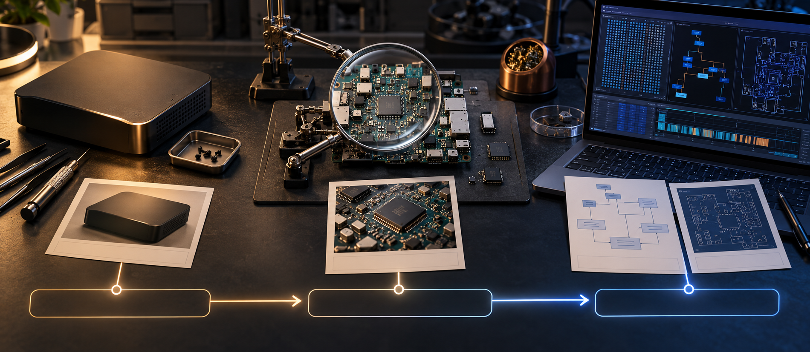

Name the target
Use a local path, archive, package or an already-open browser page.
A visual REA tutorial
REA helps your coding agent inspect local apps, binaries and runtime behavior while preserving the evidence behind each answer.

01 · Start with a behavior
Instead of asking “What is this app?”, ask something you can verify: Where does this app create its CSV export? A focused question gives the agent a route through the target and gives you a claim to check.
Use a local path, archive, package or an already-open browser page.
Choose one action, calculation, file write, request or function.
Decide what would convince you: source, bytes, output or a repeatable result.
02 · Inspect without guessing
For a JavaScript or Electron tree, start with the application analyzer. It inventories modules, derives relationships and returns Evidence you can follow up on. For a native executable, choose a configured provider and inspect the relevant function or strings.
npx -y rea-agents@6.5.0 analyze-javascript-application ./notes-example --jsonImportant: static analysis describes what the artifact contains. It does not prove that code executed.
The exact command depends on the target. REA’s CLI and MCP workflows share the same application semantics and Evidence contracts.
03 · Read the answer as evidence
An Evidence record preserves the target identity, operation, source facts, limitations and uncertainty. Treat a returned path as an observed relationship; treat “this is the export flow” as an interpretation that still needs a check.
REA found a renderer call leading to a preload API and an IPC channel.
The channel is a candidate route for the export behavior. Keep “candidate” visible until the writer is confirmed.
Read the receiving handler and run the small reconstruction with one changed input. Report what was and was not checked.
04 · Ask your coding agent
REA is most useful when the prompt tells the agent what to inspect and how to keep the answer honest.
Use REA to inspect ./notes-example.
Question: where is the CSV export written?
Trace the button through renderer, preload and main process.
Return: the relevant Evidence IDs, source paths, IPC channel, writer call,
and any unknowns. Do not claim runtime behavior from static evidence alone.